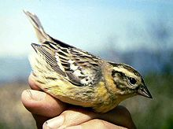
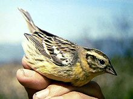

| Yellow-breasted Bunting | |
|---|---|
|  | |
| Adult female | |
| Conservation status | |
| Binomial name | |
| Emberiza aureola Pallas, 1773 |
| Yellow-breasted Bunting | |
|---|---|
|  | |
| Adult female | |
| Conservation status | |
| Binomial name | |
| Emberiza aureola Pallas, 1773 |
The Yellow-breasted Bunting, Emberiza aureola, is an Eurasian passerine bird in the bunting family (Emberizidae).
This bird is similar in size to a Reed Bunting, but longer-billed. The breeding male has bright yellow underparts with black flank streaks, brown upperparts, black face and throat bar, and a pink lower mandible. The female has a heavily streaked grey-brown back, and less intensely yellow underparts. She has a whitish face with dark crown, eye and cheek stripes. The juvenile is similar, but the background colour of the underparts and face is buff.
The call is a distinctive zick, and the song is a clear tru-tru, tri-tri.
It breeds in northeastern Europe and across northern Asia. It is migratory, wintering in southeast Asia, India, and southern China. It is a rare but regular wanderer to western Europe.
The Yellow-breasted Bunting breeds in open scrubby areas, often near water, and it is very common in Siberia. It lays 4-6 eggs in a nest on the ground. Its food consists of insects when feeding young, and otherwise seeds.
It was formerly classified as a Near Threatened species by the IUCN.[1] But new research has shown it to be rarer than it was believed. Consequently, it is uplisted to Vulnerable status in 2008.[2]

{kind=link}